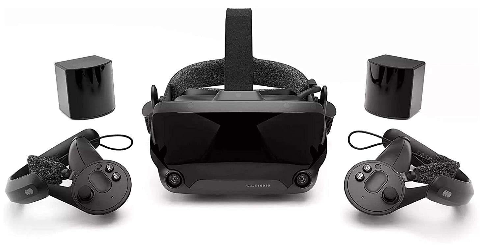
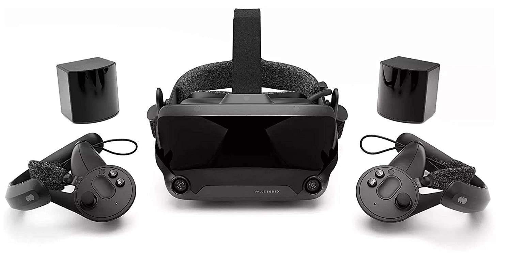

A realidade virtual comecou com o primeiro dispositivo sendo um simulador de voo para o exercito americano no ano de 1950. O primeiro simulador de voo parecia muito igual a um aviao real apenas alterando o facto do vidros frontais foram alterados por ecrãs capazes de transmitir a imagem como se tivessem no ar, esta maquina era muito grade comparada com os dispositivos mais recentes.
Hoje em dia toda a gente é capaz de ter uns oculos de realidade virtual se conseguir poupar um pouco de dinheiro pois hoje em dia temos disponiveis oculos muito compactos capazes de fazer a mesma coisa que a maquina enorme de 1950
 

Estes dois dispositivos foram os mais revolucionarios ate á altura sendo isso o ano de 2012, os Oculus Rift S os oculos de realidade virtual mais acessiveis por apenas 400 euros (sendo a primeira imagem estes mesmos) por serem baratos e com uma qualidade relativamente agradavel com os concorrentes da empresa Valve, que só os oculos custavam 500 euros sem comandos mas a diferenca entre este é a que os Oculus Rift eram "stand alone" oque significa que tinham um sistema operativo proprio para os mesmos. Os Valve Index precisam obrigatoriamente um computador para os mesmo funcionarem mas isso tambem permitia uma qualidade melhor de imagem e de processamento, para alem que estes tambem são vendidos com umas bases para captura de movimento corpural permitindo usar pernas para movimento oq era muito revolucionário para a altura.

Dia 6 de Junho de 2023 foi anunciado os oculos de realidade aumentada oque é um pouco diferente da rialidade virtual. Mas isso não tira o direito de estar presente aqui neste trabalho. O oculos de realidade aumentada da apple, entitulados como Apple Vision Pro, estes estão previstos para ser os oculos que vão revolucionar novamente o mundo da realidade virtual e realidade aumentada deixando possiveis melhorias de qualidade de vida para os oculos de realidade virutal mais antigos, tais como por exemplo melhorar interface do utilizador ou substituir a obrigatoriedade de ter sempre comandos pois sempre assim foi.
O senhor Zukerberg é um dos pioneiros da realidade virtual apesar de ter cometido muitos erros e ter tido problemas por isso, pois este senhor criou anti comptitividade pois o mesmo decidiu tentar comprar todas as empresas que desenvolviam dispositivos de realidade virtual que ele podece. Felizmente ele parou pois teve de ir a tribunal em que foi obrigado a pagar 390 Milhões de euros oque equivale a 419 Milhões de dolares. A imagem do senhore Zukerberg está presente no fundo pois eles foi uma parte importante e ao mesmo tempo foi quem "bloqueou" um pouco o avanco da tecnologia no ramo da realidade virtual.